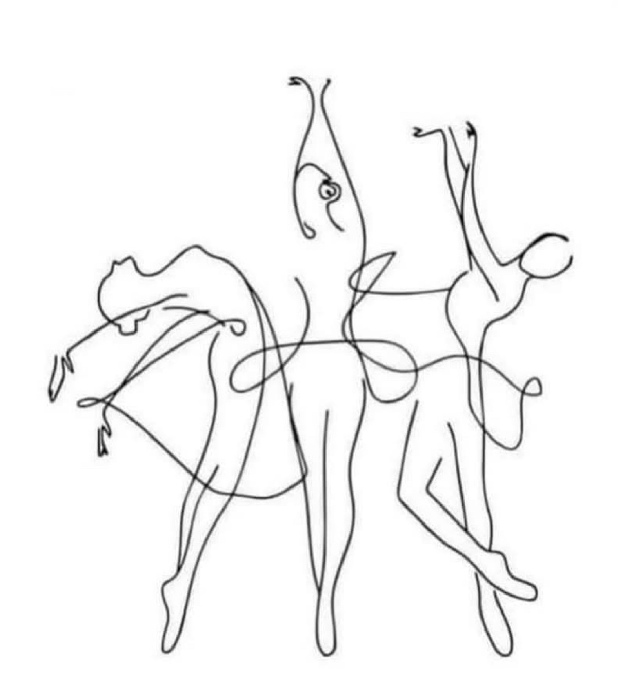

Foundation
Structured technique and movement literacy.

Academy & boutique
This page merges Stitch's academy and shop concepts into one coherent environment: teaching on one side, carefully chosen objects on the other.

Foundation
Structured technique and movement literacy.

Embodiment
Presence, gaze, composure, and private confidence work.

Objects
Boutique tools, references, and symbolic materials.
Available pathways